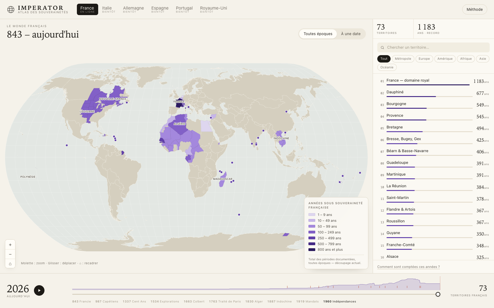
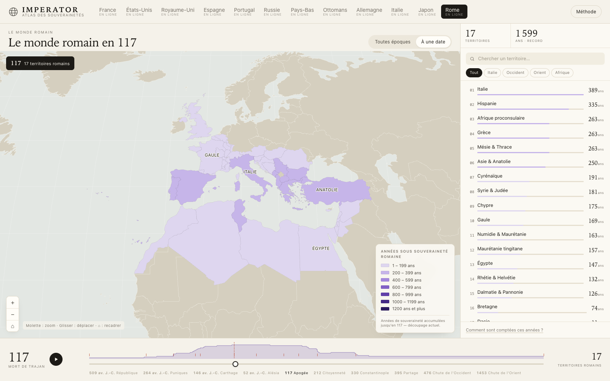
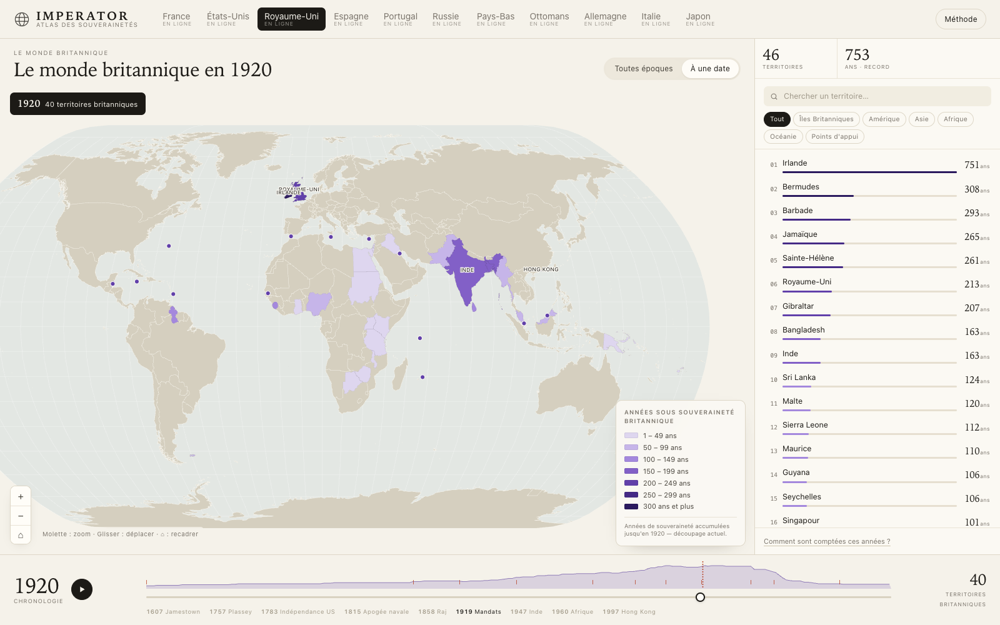

Atlas des souverainetés
Atlas of sovereignty
Douze atlas interactifs, 295 territoires, un curseur temporel : la France de 843 à aujourd'hui, Rome jusqu'en 1453, l'Empire britannique, les Ottomans, les États-Unis… Chaque région est colorée selon le nombre d'années passées sous souveraineté étrangère.
Twelve interactive atlases, 295 territories, one time cursor: France from 843, Rome to 1453, the British Empire, the Ottomans, the United States… Every region is shaded by the number of years spent under foreign sovereignty.

Pas une carte de fronte, mais une carte du temps : sept classes d'années, du comptoir tenu trois ans à la province romaine tenue quinze siècles.
Not a border map, but a map of time: seven classes of years, from a trading post held for three years to a Roman province held for fifteen centuries.
Un curseur qui se ralentit là où l'histoire s'accélère. La carte se resserre sur le territoire au IXe siècle et s'ouvre au monde quand l'empire s'étend.
A cursor that slows where history speeds up. The map closes in on the territory in the 9th century and opens to the world as the empire grows.
La France par provinces, les États-Unis par acquisitions, l'Empire ottoman par vilayets, Rome par provinces — et une note critique par fiche.
France by province, the United States by purchase, the Ottoman Empire by vilayet, Rome by province — with a critical note for every territory.

